Grace Poe
Grace Poe's surprising first-place finish in the 2013 Senate election made her a likely contender for the presidency but she dismissed any plans of running in April 2014, saying she was not considering "anything higher at this point. 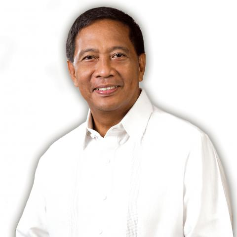
Jejomar Binay
When questioned by the media at the Coconut Palace in September 2011, Vice President Jejomar Binay confirmed his plans of running as president.
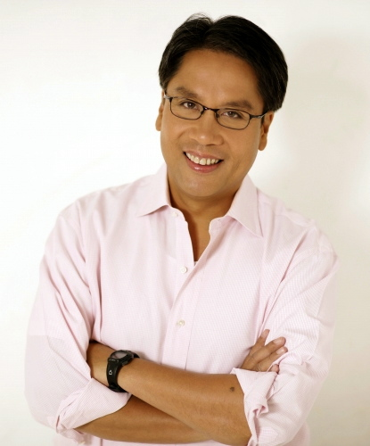Mar Roxas
Senator Franklin Drilon said in January 2013 "In so far as the LP is concerned, [and] in so far as I am concerned, we believe that he is best qualified for 2016.
Alan Peter Cayetano
In a March 2013 interview on Mornings @ ANC, Alan Peter Cayetano said "I want to be president of this country. I think I can do something great for God and his people
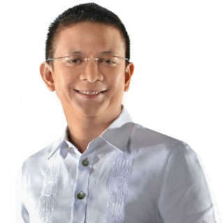Francis Escudero
In a Rappler interview published in April 2012, Senator Francis Escudero said that "Let me be honest, candid, yet factual about it. I would be very interested in seeking a higher office in 2016 for the simple reason that I’m halfway through my last term
Antonio Trillanes
In the news program Bandila's May 30, 2014 segment where a guest is asked to answer only “yes” or “no,” Senator Antonio Trillanes IV was asked if he would run for vice president in 2016 and responded by saying "Let’s just say yes, I will run. As for what position, I will abide by the Nacionalista Party
Bong Revilla
In January 2013, then House Minority Leader Danilo Suarez, Lakas-CMD vice-chairman, said that their party is likely considering Bong Revilla to be their candidate
Leni Robredo
On August 2015, Leni Robredo, representative from Camarines Sur and widow of former Interior and Local Government Secretary Jesse Robredo, remarked that plans of her running for public office in 2016 was "too soon", and that the only thing that would convince her to run was if "I'm indispensable
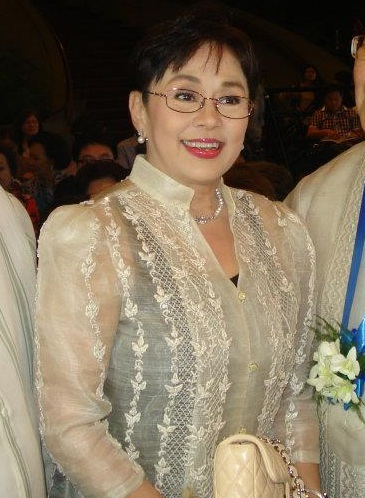Vilma Santos
Vice President Binay’s visit to Batangas in February 2014 fueled speculation that provincial governor Vilma Santos might be his running mate. In a later interview, he finally admitted to considering her as his vice-presidential candidate
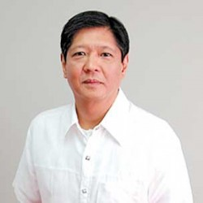Ferdinand Marcos, Jr.
Asked in a November 2012 interview on radio DZBB if he is going to run for president, Ferdinand Marcos, Jr. said he is not closing his doors and “There’s a saying, ‘Never say never,’ so maybe
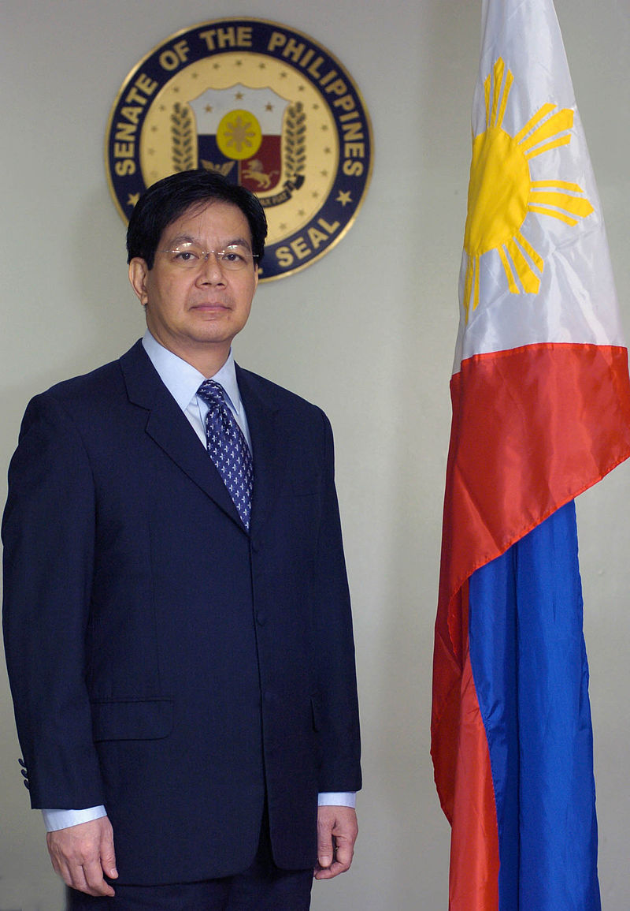Panfilo Lacson
Interior and Local Government Secretary Mar Roxas acknowledged that Panfilo Lacson is qualified to run in for president, but there have been no talks on the latter joining the Liberal Party. Despite of this, he said on February 2014 that he is “color blind” to politics and would rather focus on rehabilitating areas hit by Typhoon Yolanda
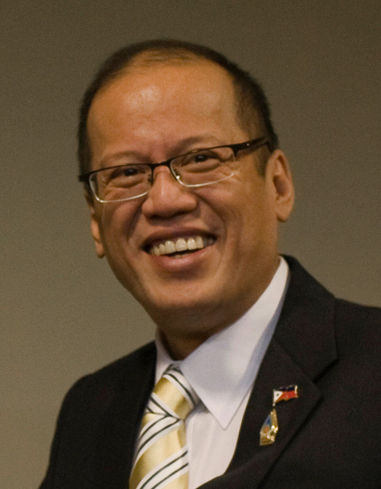Benigno Aquino III
In October 2013, Aquino ruled out a 2016 reelection campaign, even if the presidential term limit is lifted
Kris Aquino
On April 2, 2013, Lingayen-Dagupan archbishop emeritus Oscar Cruz has asked presidential sister and actress Kris Aquino's camp to clarify reports of her plans on running for the vice presidency because he heard of her political plans from "credible sources within the administration
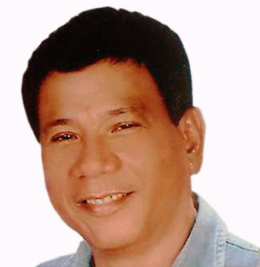Rodrigo Duterte
Davao City Mayor Rodrigo Duterte reportedly enjoys the support of several netizens who laud his performance, especially on maintaining peace and order but he was quick to shrug off calls for him to run as President on February 2014, saying he is not qualified for higher public office
JV Ejercito
In May 2014, Senator JV Ejercito ruled out becoming the running mate of Vice President Binay and said that running for a higher post in the next elections is "farthest" from his mind
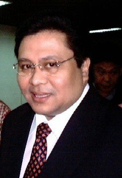Jinggoy Estrada
In an oath-taking ceremony of Pwersa ng Masang Pilipino members in November 2012, Jinggoy Estrada compared himself to his father, former President and Manila Mayor Joseph Estrada. He said his father describes him as a copycat, saying he also became San Juan mayor, senator and even best actor. But after noting that his father’s election to the vice presidency, he said "It’s up to you what will happen next

Joseph Estrada
In February 2014, Joseph Estrada said that he has already served as president and that his post as Mayor of Manila will be his "last hurrah.
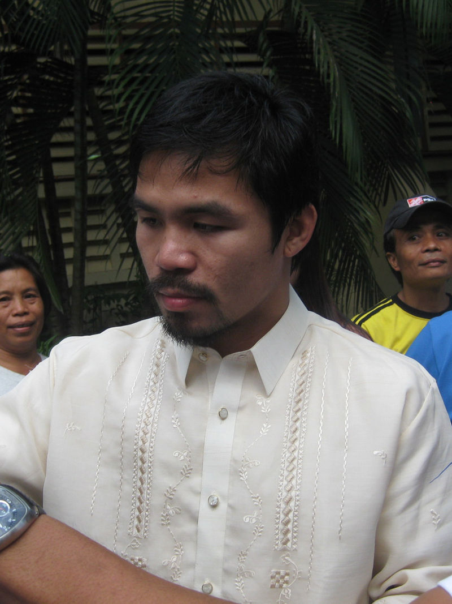Manny Pacquiao
Congressman from Sarangani Manny Pacquiao said on DZBB radio during the press conference of his 2011 fight against Juan Manuel Marquez in Mexico that "Come 2016 I am going to run (for) vice president... No more boxing at that time
Francis Pangilinan
In May 2014, then newly-appointed Presidential Adviser on Food Security and Agricultural Modernization Francis Pangilinan said that "I'm not interested in the presidency, and I’m not interested in the elections at this time.
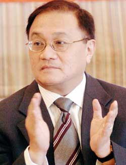Manny Pangilinan
By late 2010, Manny Pangilinan, chairman of utility companies PLDT and Meralco. and of TV5, is claimed as a "dark horse" by political analysts.
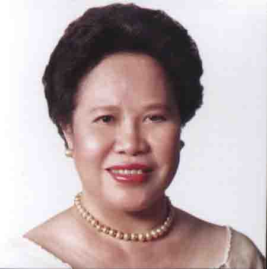Miriam Defensor Santiago
In a press conference on July 2, 2014, Miriam Defensor Santiago revealed she is suffering from Stage 4 lung cancer and she might run as president for the third time if it goes into remission
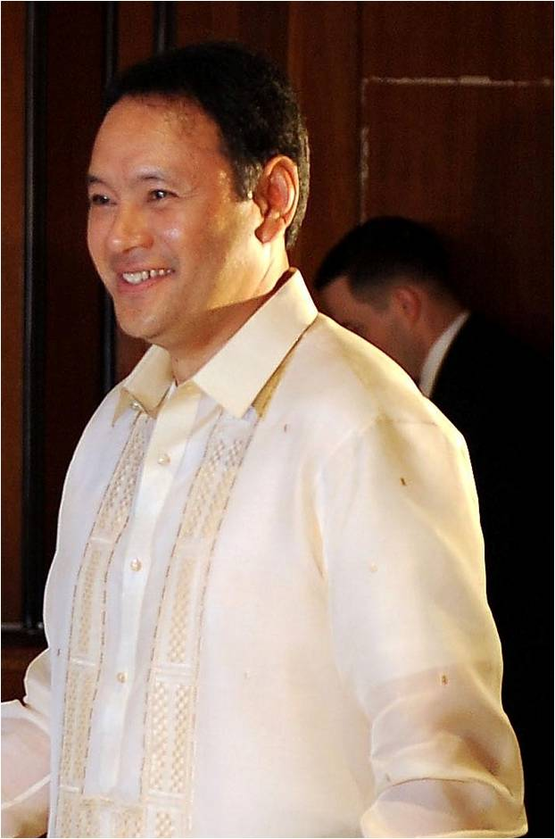Gilberto Teodoro, Jr.
In September 2014, Davao City Mayor Rodrigo Duterte said that, instead of being the running mate to Senator Santiago, he wants Gilberto Teodoro, Jr. to be his running mate
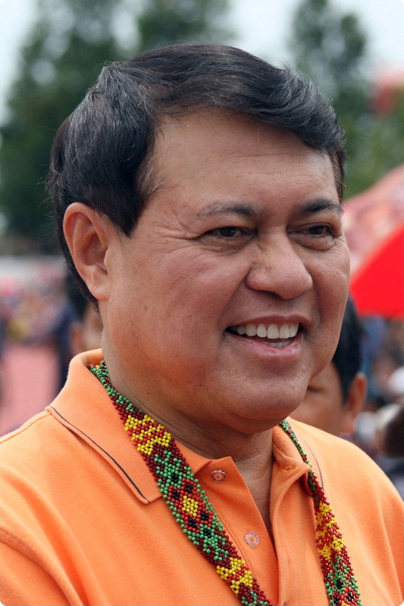Manny Villar
His wife, Senator Cynthia Villar, did not rule the possibility of him running for president again, saying on March 2014 "You know, for Manny, presidency is destiny for him after 2010. He said if it’s meant for you, then it will come. If not, then it won’t come.